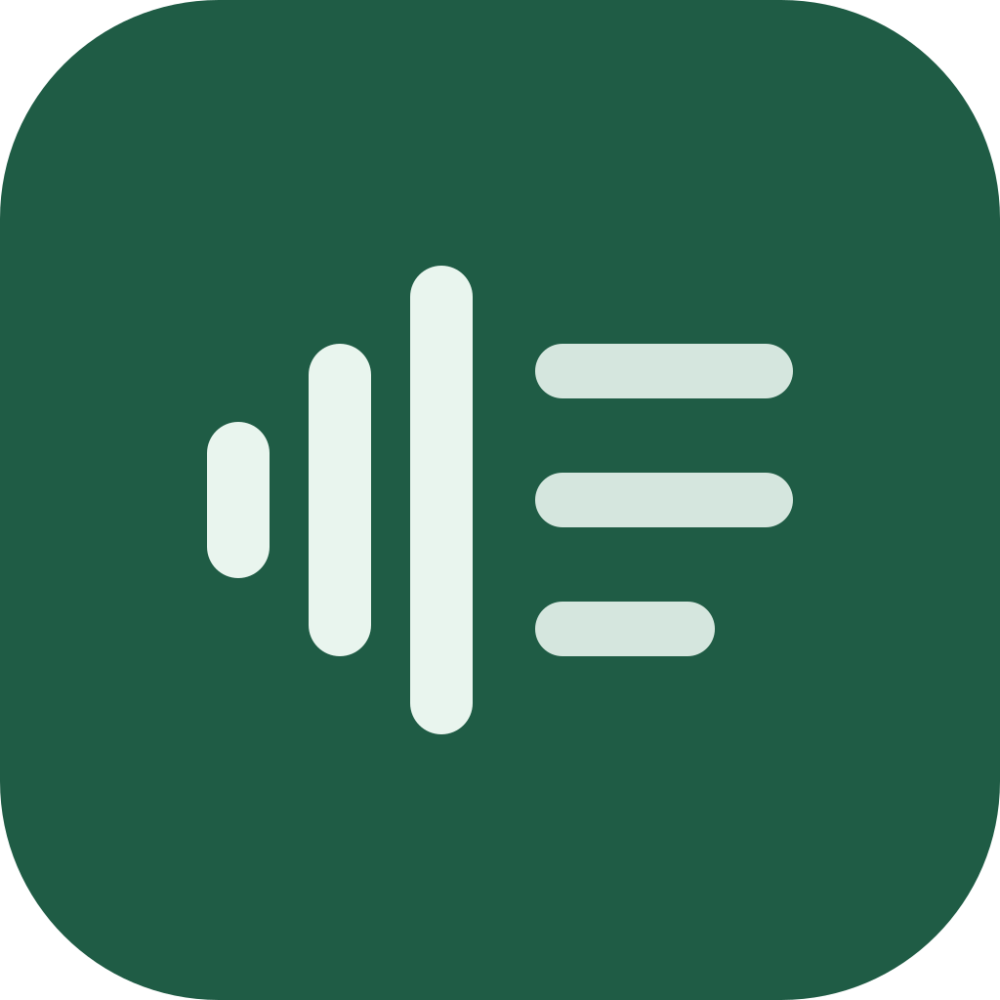

Transcritor
Transcreve reuniões 100% no seu computador, com o Whisper rodando na GPU. Nem o áudio nem o texto saem da máquina. Organiza as gravações numa biblioteca, com busca em tudo o que foi dito, player sincronizado e nota de confiança em cada trecho.
Baixar para Linux
Buscando a versão mais nova…
Linux
-
AppImageQualquer distro recente (Ubuntu 22.04+, Debian 12+, Fedora 36+, Arch). Não instala nada no sistema.
-
.debUbuntu, Debian, Mint, Pop!_OS
-
.rpmFedora, openSUSE
Instalar
AppImage
chmod +x Transcritor_*.AppImage
./Transcritor_*.AppImage.deb
sudo apt install ./Transcritor_*_amd64.deb.rpm
sudo dnf install ./Transcritor-*.rpmBom saber
- Na primeira vez, o app baixa o modelo do Whisper que você escolher (o padrão tem ~550 MB). Depois disso, transcrever não usa internet.
- Usa a GPU pelo Vulkan: funciona com placas NVIDIA, AMD e Intel com o driver instalado. Sem GPU, roda na CPU, mais devagar.
- Windows e macOS ainda não. Estão planejados.
Conferir o download
Baixe o SHA256SUMS da mesma versão para a pasta do instalador e rode:
sha256sum -c SHA256SUMS --ignore-missing